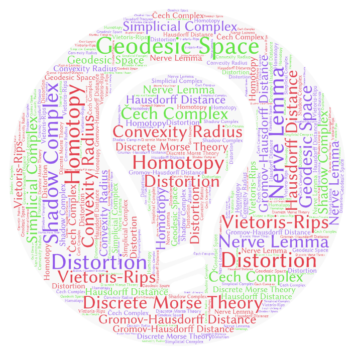
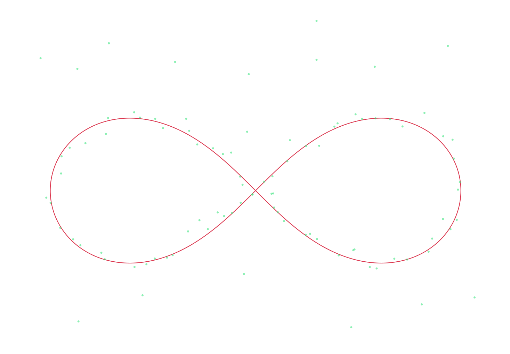

Topological Methods
in
Shape Reconstruction
and
Comparison
November 25, 2020

Slides: smajhi.com/defense
Thesis: smajhi.com/thesis
Collaborators

Carola Wenk (adviser)
Computer Science, Tulane University

Brittany Fasy
School of Computing, Montana State University

Rafal Komendarczyk
Mathematics, Tulane University

Jeffrey Vitter
Computer and Information Science, University of Mississippi
Special Thanks
-
Yusu Wang andFacundo Memoli , Ohio State University -
Helmut Alt , Free University of Berlin -
Mathematics andComputer Science Department
The Manifesto

- Introduction to Shape Reconstruction
- Nerve, Čech and Vietoris-Rips
- Topological and Geodesic Reconstruction of Geodesic Spaces
- Non-Hausdorff Noise and Discrete Morse Theory
-
Break - Introduction to Shape Comparison
- Hausdorff and Gromov-Hausdorff Distance
- Approximation Algorithm
I . Shape Reconstruction
Shapes


Smooth Manifolds (the good ones)
Our shapes of interest (the ugly ones)
Geodesic Shapes
The Reconstruction Problem

Noisy Sample

Sample from

GPS Traces Berlin

Reconstructed Map or Road-Network
Problem Statement
- Let $X$ be a
hidden subset of $\mathbb{R}^N$ - We have a sample or a point-cloud $(S,\|\cdot\|)$
-
$S$ is
dense around $X$, i.e.,
$d_H(X,S)$ is small
- Compute
$H_*(X)$ and/or$\pi_*(X,b)$ from $S$ - Construct $\widetilde{X}$
homotopy equivalent to $X$ - $\widetilde{X}$ has an
embedding in $\mathbb{R}^N$ - $\widetilde{X}$ is
geometrically close to $X$

Hausdorff distance is $\max\{$
$d_H^Z(A,B)=\max\{$
$d_H^Z(A,B)$ is sensitive to
Shape + Size + Placement.
Data ⟶ Shape
Vietoris-Rips Complex at scale $\epsilon>0$
 ⟶
⟶

Čech Complex at scale $\epsilon>0$
Manifold Reconstruction
small $\epsilon$ + dense sample
=
small $\epsilon$ + dense sample
=
Geodesic Spaces
small $\epsilon$ + dense sample trickdoes not work
😢
Our Approach
- $X\subseteq\mathbb{R}^N$ is a
geodesic subspace $(X,d_L)$ -
Convexity radius $\rho$ is positive - $d_H(X,S)$ is small
Topological Reconstruction
Geometric Reconstruction
Non-Hausdorff Noise Model
The sample has distant
Discrete Morse
2 . Comparison
Motivation

circle

triangle

triangular

circular


Map Construction from GPS data (Berlin)
https://mapconstruction.org
Shape Comparison
We need an appropriate notion of a distance measure $d_?(X,Y)$ so that
- $d_?(X,Y)$ defines a pseudo-metric on the class of metric spaces.
- $d_?(X,Y)$ large $\iff$ very different shape
- $d_?(X,Y)$ small $\iff$ $X=Y$ up to a class of deformation.
Hausdorff under Isometry
$d_H($◤, ◢ $)=$ large.
- For $N=1$, $T$ is translation or reflection.
- For $N=2$, $T$ is rotation, translation or reflection.
$d_{H,iso}$ is sensitive to Shape + Size +
$d_{H,iso}($◤, ◢ $)=0$.
Gromov-Hausdorff Distance
How to compare shapes that do not have a common embedding?

Isometric Embedding
$d_{GH}$ vs $d_{H,iso}$
Computing $d_{GH}$
$d_{H,iso}$ approximates $d_{GH}$ with an approximate factor of $\left(1+\frac{1}{4}\right)$.
Directions
- How to approximate $d_{GH}$ in higher dimensions?
- What is the least dimension where it is NP-hard?
- Is it NP-hard in $\mathbb{R}^1$?
QUESTIONS.